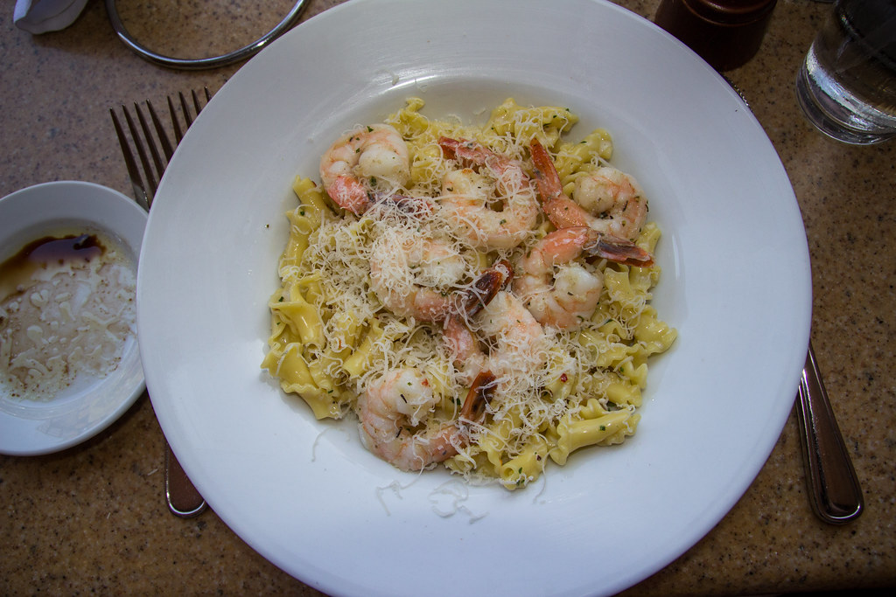

Home
Shrip Scampi Pasta

What Is Shrimp Scampi?
Shrimp scampi is a seafood dish made of shrimp cooked in a butter, garlic, and white wine sauce. This recipe can be made in many ways. Everyone has a different version, but scampi usually includes these three ingredients. You can serve shrimp scampi by itself as an appetizer or over pasta as a main dish.
This quick and easy shrimp scampi pasta recipe is an Allrecipes fan-favorite, with more than one thousand ratings and hundreds of reviews. And it's ready to serve in only 40 minutes. Read on to get tips to make the best shrimp scampi — it's a top-rated recipe that's simple enough for weeknight dinners and fancy enough for a dinner party.
Ingredients
- 1 (16 ounce) package linguine pasta
- 4 tablespoons butter
- 5 tablespoons extra-virgin olive oil
- 2 shallots, finely diced
- 2 cloves garlic, minced
- 1 pinch red pepper flakes (Optional)
- 1 pound shrimp, peeled and deveined
- 1 pinch kosher salt and freshly ground pepper
- ½ cup dry white wine
- 1 lemon, juiced
- ¼ cup finely chopped fresh parsley leaves
Detailed Steps
- Bring a large pot of salted water to a boil; cook linguine in boiling water until nearly tender, 6 to 8 minutes. Drain.
- Melt 2 tablespoons butter with 2 tablespoons olive oil in a large skillet over medium heat.
- Cook and stir shallots, garlic, and red pepper flakes in the hot butter and oil until shallots are translucent, 3 to 4 minutes.
- Season shrimp with kosher salt and black pepper; add to the skillet and cook until pink, stirring occasionally, 2 to 3 minutes. Remove shrimp from skillet and keep warm.
- Pour white wine and lemon juice into skillet and bring to a boil while scraping the browned bits of food off of the bottom of the skillet with a wooden spoon.
- Melt 2 tablespoons butter in skillet, stir 2 tablespoons olive oil into butter mixture, and bring to a simmer..
- Toss linguine, shrimp, and parsley in the butter mixture until coated; season with salt and black pepper. Drizzle with 1 teaspoon olive oil to serve.
Note: This recipe is not owned by me and came from "allrecipes.com"
ORIGINAL PAGE HERE